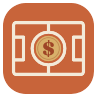

Matchfixarna i telefonen
Hela sajten som en app – tobaksaffären, kupongen och Olympen, utan adressfält.
Du har redan appen – det är den du tittar i.
- Dela en skärmbild av systemet i Svenska Spels app till Matchfixarna, så fylls kupongen i.
- Tipsen och namnet du valt i Chrome följer med till appen.
Hämta appen som fil i stället
- Ladda ner filen. Frågar Chrome om du vill behålla den, svara Ladda ned ändå.
- Öppna filen när den är nedladdad – tryck i aviseringen eller under Nedladdningar.
- Tillåt installationen första gången: Inställningar → Tillåt från den här källan, och tillbaka.
- Installera. Varnar Play Protect för en okänd app, välj Installera ändå – appen kommer inte från Play Butik.
Ladda ner filen Gratis · version 1.0 · 0,6 MB
Har du iPhone?
Öppna matchfixarna.se i Safari, tryck på Dela och välj Lägg till på hemskärmen.